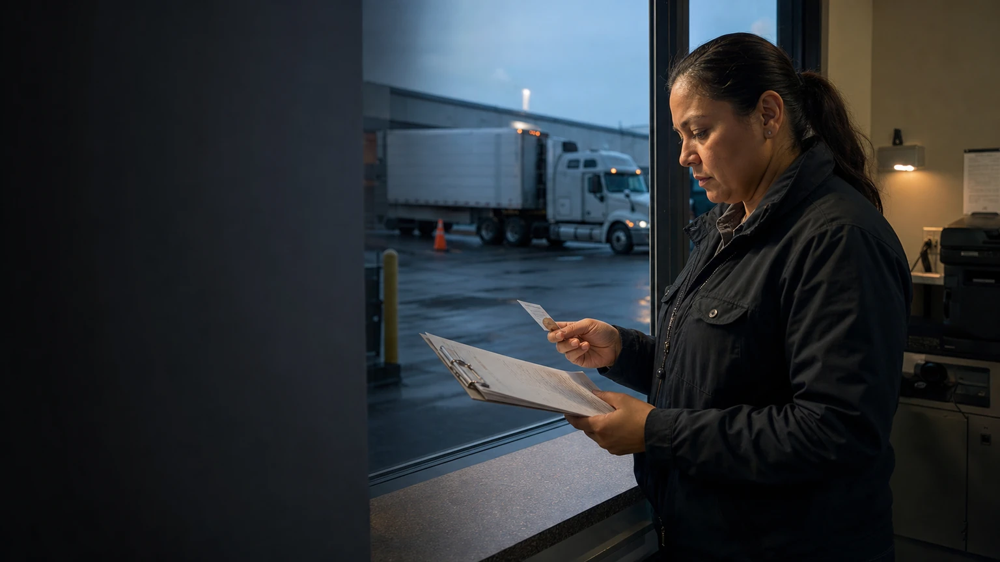

Hold boundary
State exactly what the record does and does not permit while the issue is unresolved.

Compliance-hold case · 1931
A simulated compliance case that keeps the issue, operating consequence, owner, resolution evidence, and audit trail together.
Return to operations record →Operating proof
This is a static BOF operating view. It presents review context and simulated record structure without implying a live integration, credentialed data, or automated action.
State exactly what the record does and does not permit while the issue is unresolved.
Keep the document or review outcome visible beside the condition it resolves.
Record who reviewed the change and how the operating posture changed.
This static casefile separates the unresolved condition from the evidence needed to change the operating posture.
Evidence shelf